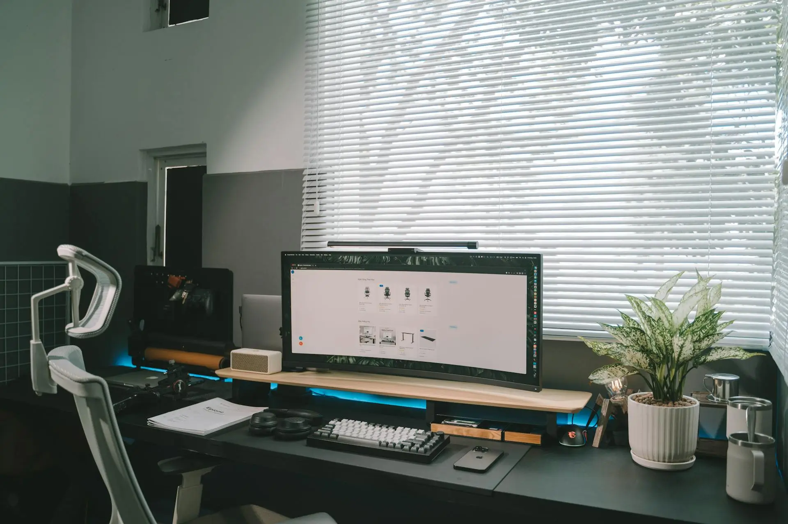

View Project →
Lune
Lune Studio
2025
2025
App Visual Direction
Brand Experience →
Aren
Aren Agency
2025
2025
Fashion Brand Launch
Identity & Strategy
Oura
Oura Wellness
2024
2024
Brand Refinement
Visual Identity